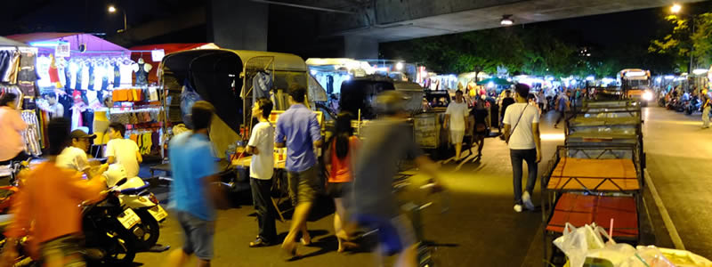

Bangkok in May

Bangkok in May is hot, and I mean very hot, too hot to do anything. You won't have much fun if your plan is to get lots of sightseeing done.
Our main purpose in Bangkok was to sort our Burmese visa and so we found ourselves a condo with air con where we could hide from the heat with a pool for 800 THB in a suburban middle class condominium a little out of town with wifi on tap which we booked on Air BnB. With the heat in mind we saved most sightseeing for the evenings when its a balmy 30c whenever possible.
Getting around:
- The sky train – Has got to be the best thing to happen to this traffic clogged city in a long time. It is cheap and air conditioned, doesn’t go everywhere yet but better than nothing. The ticketing system is simple and all stations have fare boards which tell you exactly how much your ticket will cost based on the station you are in. You just buy a ticket for the right amount. It is popular and constantly busy, but has small TVs which show very badly acted Thai ads which are really amusing. I think they could learn some stuff from the Venezuelan soap operas.
- Taxi – As a general rule, if it isn’t rush hour getting a taxi is a good deal. Rush hour will mean they will be stuck in traffic while the meter keeps going up and you are not going anywhere. Cheap and convenient just make sure the meter is on.
What to see and do:
- Night markets – Shopping is an activity that can be done day and night in Bangkok. In the day the air con malls are a welcome respite from the intense heat, and in the night numerous night markets can keep a shopaholic entertained. They sell all sorts of fake branded things, as well as infinite variations of coloured contact lenses.
- Temples – There is no way to see these at night so we spent a sweltering day having a look at the Grand Palace, Wat Arun and Wat Pho. All three are really beautiful. One thing worth considering when visiting the Grand Palace is that there are FREE english tours everyday at 10.30 and 2.30 and the meeting point is on the left once you enter the grounds after the security checks your tickets. Really helps to understand what you are looking at and best of all free! Wat Arun is the "Temple of the Dawn" but not because it should be seen at dawn - actually because the king got there at dawn back in the day. Be warned that the stairs are vertigo-inducing steep.
We also found Bangkok to be perfect for going to the dentist and getting vaccinations as it is a lot cheaper than in the UK for example. As we are starting our trip here we had already got most of our jabs done in London. Our advice is, do them in Bangkok instead. We went to the Hospital of Tropical Diseases and found the service and facilities amazing, not to mention that a jab that would have cost £150 in the UK cost just over £10 here. The doctors and nurses were excellent and gave us what seemed like very knowledgeable advice on South East Asia travelling health. We went to try to get anti-malarials for our visit to Burma and were advised to just carry the emergency course, and instead they explained that Japanese Encephalitis is of more concern at the moment.
The dentist came as a recommendation and I would also recommend it myself, really good service and professional advice for 50% of the price of the UK.
Comments